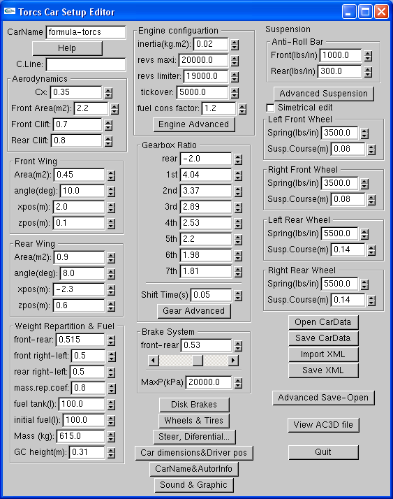
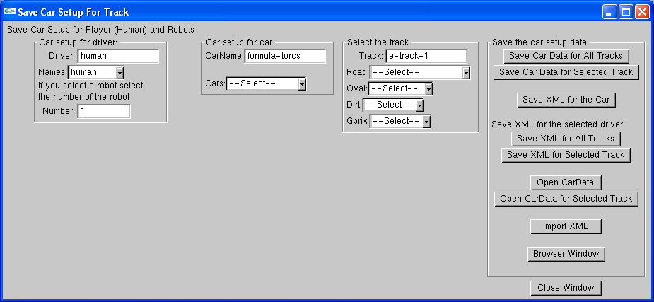
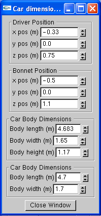

Torcs Car Setup Editor is an Open Source program with the GNU GENERAL PUBLIC LICENSE designed to edit the physics of cars for TORCS (The Open Racing Car Simulator).
The program is programmed using OpenGL (with GLUI). So it works for Windows and Linux.
Download Torcs Car Setup Editor v0.11
Unzip the torcs-car-setup-editor.zip and copy the torcs-car-setup-editor folder into your torcs directory ("C:\torcs" or similar). Now run torcs-car-setup-editor.exe (you can create a shortcut to your desktop).
You can also compile it from the devc++ project that is included.
The program is already compiled.
To run the program:
./torcs-car-setup-editor
-------------------------------------------How to compile tcse in linux
-----------------------------
Download the source and compile it (you need the GLUI library, I used glui-2.35). You can download glui on souceforge.net. The glui is already compiled in the tcse sources.
Explanation for ubuntu 8.04
You need the gcc compiler:
sudo apt-get install g++-4.2
You need freeglut:
sudo apt-get install freeglut3 freeglut3-dev
and glut:
sudo apt-get install glut-doc libglut3 libglut3-dev
you may need the glui library but it is compiled
in the folder ./libs and the header file
is located in ./include
now you can compile the project wiht make:
make
------------------------------
to install tcse:
---------------------------------
sudo ./install.sh
the program is installed in: /usr/local/share/games/torcs/tcse
-------------------------------------------
to run torcs-car-setup-editor
-------------------------------------------
in the terminal just type: tcse
Torcs Car Setup Editor will help you in the setup of cars, the main features are:
If you click on the X button in the upper right of the main window or a subwindow you will close the program. Don' t click on the X button in the upper right of the subwindow, click on Close Window or Accept instead.
In the main window you can edit some parameters of the car

In the opengl window you can see some parameters that are displayed here. First you can see the graphic of the engine. On the upper left side of the graphic you can see the max power and the max torue of the engine.
Under the graph you can see some data of your car: acceleration, grip, speed and braking. This can be useful fut it's not 100% perfect.
The gear ratio section shows some info about the car. The most useful is the max speed in km/h for each gear at revs limiter. The next column shows the revs you get when you change at the next gear and finally the power and torque at the next gear at these revs.
The last part shows info when you save a file, import a xml...
The setup of the Cx, front area and the front lift and rear lift (front & rear lift due to body not wings) can be setup in this window.
The front and rear wing are also setup here.
You can setup the mass of the car and the weight repartition and the fuel. Very simple.
You can adjust the points of the engine. Moreover to the program provides several engines that you can load by selecting it in the list and clicking on load engine.
The full rpm scale is used in the graph (full: all the points are displayed, and if full is not selected the points displayed are from 1 to revs maxi).
Load engine: you can load a engine by selecting it from the list box and click on load Engine.
Scale all CV scales all the engine curve to setup the peak to the number indicated.
Constant CV: self explanatory.
Scale all TQ scales all the engine curve to setup the peak to the number indicated.
Constant TQ: self explanatory.
Change RPM points: changes the rpm points from 0 to revs limiter.
Change Shape: changes the power curve of the engine acording a 3rd grade ecuation (power= a + b*rpm +c*rpm^2 + d*rpm^3).
You can adjust all the parameters (Spring (lbs/in), suspension course (m), bellcrank, packers (mm), slow bump (lbs/in/s), slow rebound (lbs/in/s), fast bump (lbs/in/s), fast rebound (lbs/in/s)). The Symmetrical edit is a useful tool to save lots of time. If you click on the advanced button you will find more parameters.
You can adjust (position, rim diameter, tire width, tire height-width ratio, inertia, initial ride height, toe, camber, stiffness, dynamic friction, rolling resistance and my) all the parameters. The Symmetrical edit is a useful tool to save lots of time.
You can setup the gear ratio from the main window and if you go to the advanced you will find new parameters.
You can select the number of gears, setup the inertia of the clutch, the inertia and efficiency of all the gears and you can setup the max speed (at revs limiter) of each gear (therefore the gear ratio is automatically updated). The auto calculate button will calculate all the gears, the "space" in km/h between two gears is reduced increasingly by the % indicated. The min speed to the calculation is the speed of the 1st gear and the max speed the speed of the higher gear used.
The optimal shift point function calculates the optimal shift points (using the criteria that maximizes the area under the engine power curve). It take a while because it's an iterative method to maximize the area. If the shift point is larger than the revs limiter i't's better to shift at revs limiter.
In the steer and differential window you can setup the steer and the front, rear or central differentials of the car. Moreover the drivetrain (4WD, RWD, FWD) can be setup here.
There are different kinds of differentials you can choose in the listbox:
Other parameters like ratio, inertia, efficiency, min torque bias and max torque bias can be setup here.
You can adjust all the parameters of the diskc brakes. The Symmetrical edit is a useful tool to save lots of time.
The front rear brake balance repartition can be adjusted and the max pressure of the brake.
You can save the cardata to a txt file (the native TCSE format) or a xml file. The file can be exported to:
This is done in one click at the appropriate button.
If the folder doesn't exists the program will ask you if you want it to be created automatically and export the file. For example if you want to create a new car similar to the car sc-f1: start tcse, then change the carname to sc-f1 and click on import xml. Now modify the car setup with tcse and then change the carname to the carname you want (my-f1 for example), then click on export xml. The program will ask you if you want to create the folder my-f1 and export the xml, click to this button and therefore you have your car on ../cars/carname/carname.xml. Now you just need to add the 3dfiles and textures to this folder.
Moreover you can import directly the ../cars/carname/carname.xml or you can use the filebrowser (to select the file double click on the xml file).
When you save a xml file a backup is automatically generated in the folder xml-backups/carname/carname-day-month-daynumber-hour-minute-second-year.xml.

You can setup the carname, the full carname and the car category (F1, historic, nascar...) here.
The autor name and email are automatically saved and they are used when you export the xml. Therefore your name and email are automatically added.
These parameters can be edited here. It's easy to setup this in the 3d view of the car.

It's possible to setup the engine sound and other graphic properties.
You can change all the 3d filenames (.ac or .acc) from your car name in one click on autogenerate carname and the number of car shapes (the number of ranges).
The autogenerate funcition creates the names following the next algorithm:
graphicenv = carname+fileType;
carRange1= carname+fileType;
carRange2= carname+"-lod1"+fileType;
carRange3= carname+"-lod2"+fileType;
carRange4= carname+"-lod3"+fileType;
carRange5= carname+"-lod4"+fileType;
You can adjust the lights and flames of your car. If you don't activate them they are not exproted in the xml.
In this window you can see the ac file of your car (the car range 1 of the Graphic/Ranges section).
You can setup some parameters like the wheel position, position of the front and rear axle...
The command line will save you some time to setup some parameters. I'ts under development and in future versions it will have more commands. The commans implemented in version 0.10 are:
In new version of the program